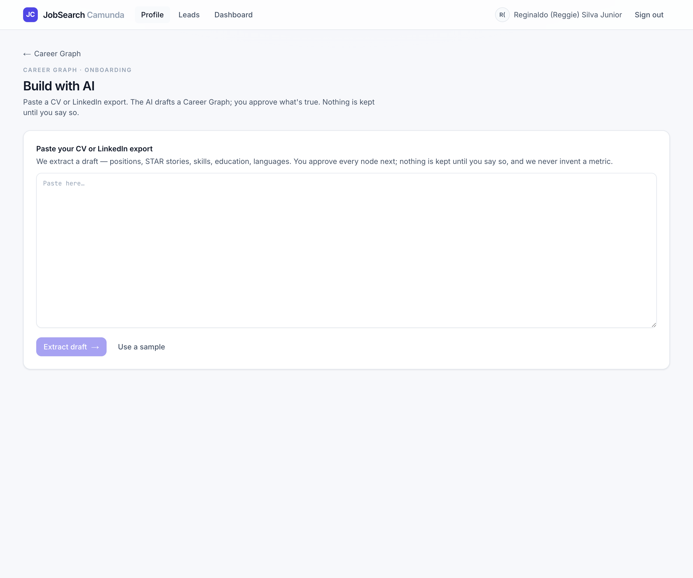
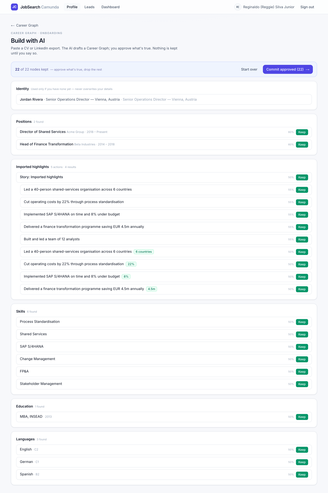
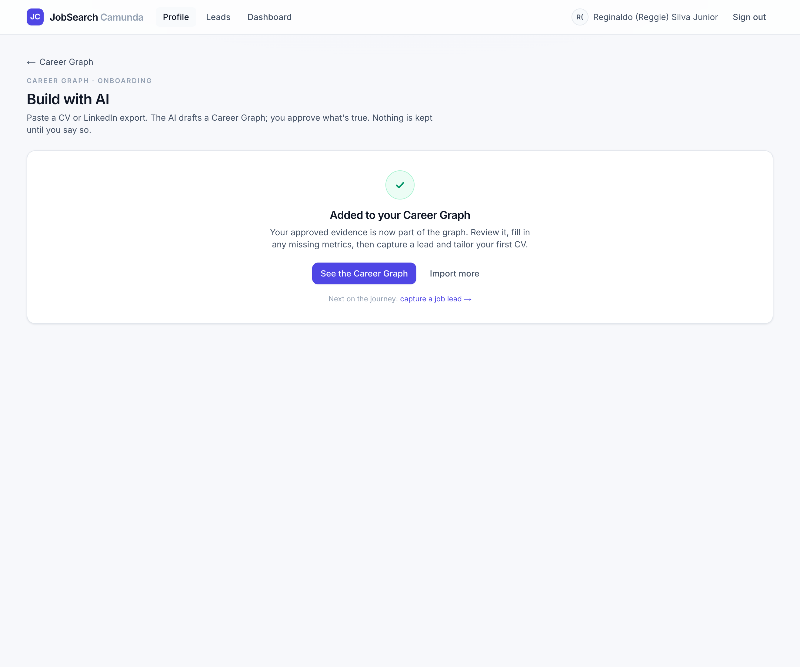
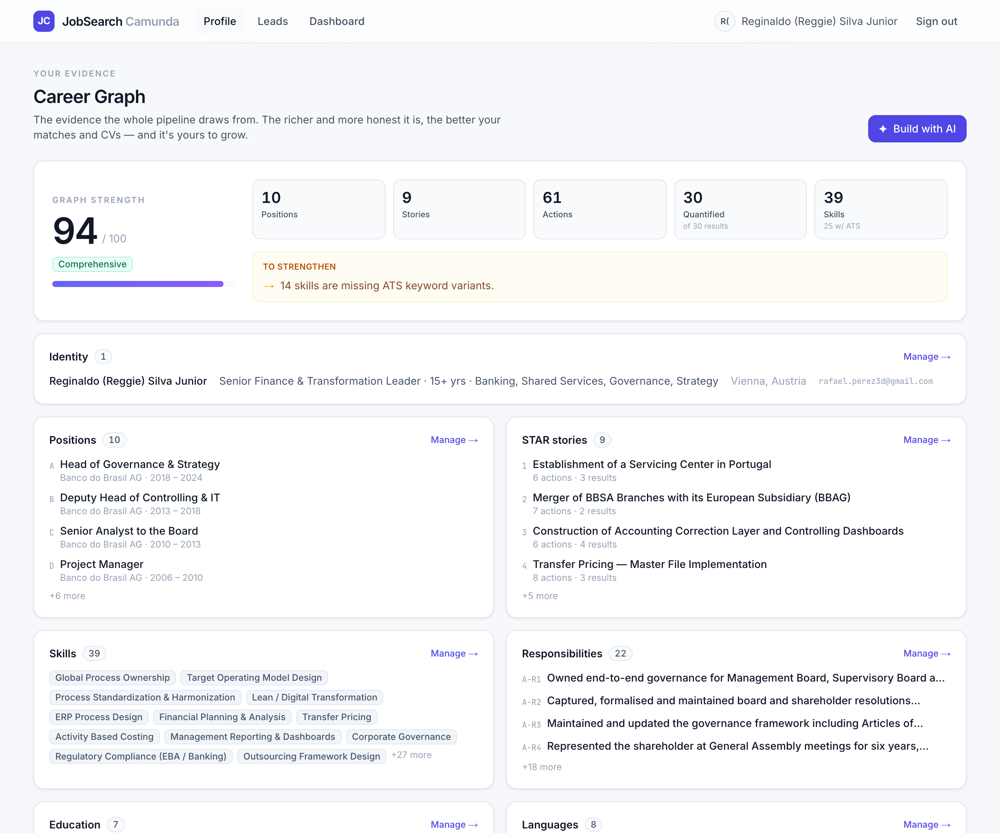

O1 made your Career Graph visible and editable. O2 makes it fast to build: paste a CV or LinkedIn export, the AI drafts a graph, and you keep what's real. It's the system's own best move — AI drafts, you curate — applied to building the profile.
Drop in a CV or LinkedIn export — or try a sample.
A draft graph — positions, stories, skills, education, languages — each scored by confidence.
Keep or drop every node. Only approved evidence is kept — staged, never auto-saved.
Approved nodes promote into your real evidence tables with fresh ref codes.




Extraction runs through the one LLM choke point (runStructured): live it forces the
emit_career_graph tool; with no API key a deterministic heuristic parses the text so the whole flow
demos offline. The draft is staged in onboarding_state.draft_graph — unapproved AI output never touches the
trusted tables, the same pending → green discipline as tailoring. On commit, kept nodes promote with fresh
ref_codes and the importer never overwrites an existing identity. The live prompt lives in
Process/Onboarding/…md — refine the step by editing markdown, not code.
PDF / DOCX / native LinkedIn-export parsing isn't wired yet. A pdf-parse / mammoth step is the obvious next addition.
No API key here, so only the mock heuristic runs. It groups all bullets under one “Imported highlights” story and isn't always clean — the live LLM would produce real STAR groupings. Needs a key + prompt tuning.
The draft carries source + confidence, but committed rows aren't tagged yet. O3 stores and surfaces provenance (badges) and uses confidence to drive coaching.
The gate is Keep / Drop only; you edit nodes after commit in the O1 section editors. Inline editing in the gate is a natural O3 polish.
Importing can create near-duplicates of evidence you already have. A “looks like something you already have” check is a future safeguard.
docs/phases/O2.md · code in lib/onboarding.ts,
app/actions/onboarding.ts, components/onboarding-wizard.tsx.
Screenshots are live captures of the running app (mock-LLM mode).